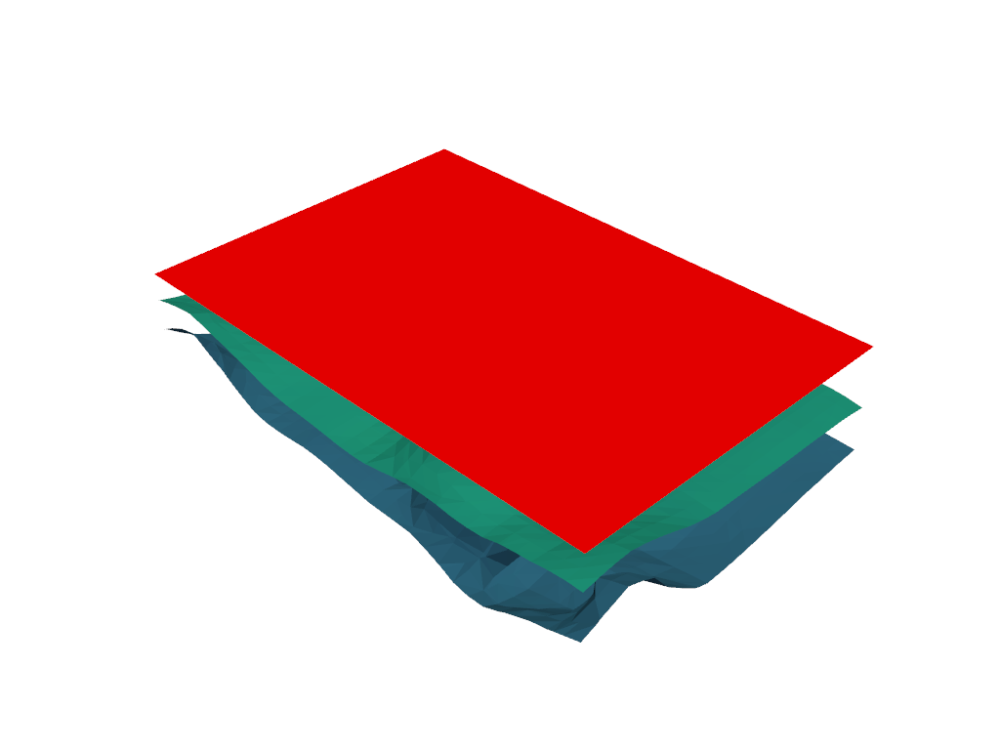

Note
Go to the end to download the full example code.
1c. Multiple groups#
Creating a model with multiple geological features, dealing with unconformities.

from LoopStructural import GeologicalModel
from LoopStructural.datasets import load_claudius
from LoopStructural.visualisation import Loop3DView
data, bb = load_claudius()
data = data.reset_index()
data.loc[:, "val"] *= -1
data.loc[:, ["nx", "ny", "nz"]] *= -1
data.loc[792, "feature_name"] = "strati2"
data.loc[792, ["nx", "ny", "nz"]] = [0, 0, 1]
data.loc[792, "val"] = 0
model = GeologicalModel(bb[0, :], bb[1, :])
model.set_model_data(data)
strati2 = model.create_and_add_foliation(
"strati2",
interpolatortype="FDI",
nelements=1e4,
)
uc = model.add_unconformity(strati2, 1)
strati = model.create_and_add_foliation(
"strati",
interpolatortype="FDI",
nelements=1e4,
)
viewer = Loop3DView(model)
viewer.plot_surface(
strati2,
# nslices=5
value=[2, 1.5, 1],
)
viewer.plot_surface(strati, value=[0, -60, -250, -330], paint_with=strati)
viewer.display()
Total running time of the script: (0 minutes 3.279 seconds)